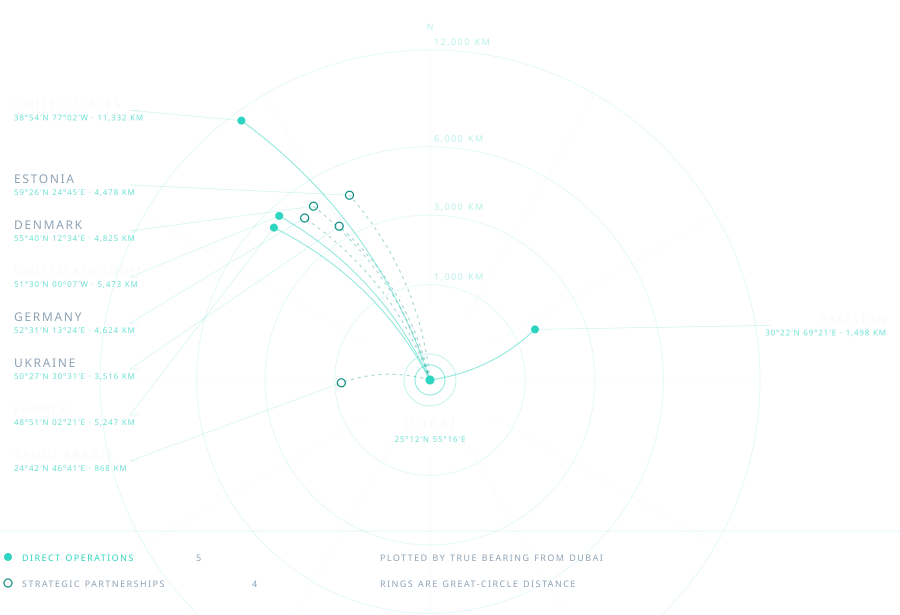
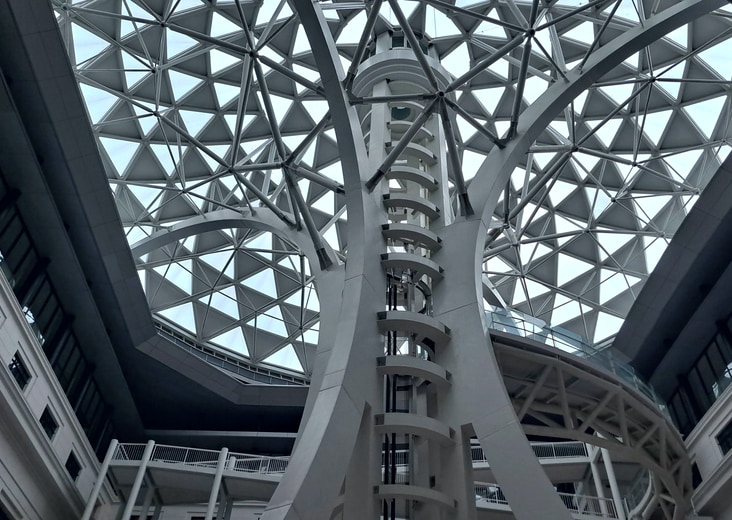

BH Ventures FZE LLC · Dubai, UAE · Edition 01
MMXXVI
Building the Future
of Ventures.
Bridging Trade, Technology & Innovation from the UAE.
Ten disciplines · Nine markets · One standard
The design idea is not imported. It comes out of the company's own language.
…treats ambition as infrastructure, not inspiration.
…treat every new market the way an architect treats a blank site.
We're not predicting the next market. We're building the road to it.
BH Ventures describes itself in the language of an architect. So the magazine is built with an architect's discipline: every element sits on a visible system, and nothing is arbitrary. That is the same thing the copy says — ten disciplines, one standard — said in layout instead of words.
This is not a blueprint aesthetic. Blue paper and dashed lines would be a costume. This is the discipline of one.
One hairline at 62mm from trim on every page, photo or text.
Section numbers set as outline figures, the way a drawing set numbers its sheets.
25°12′N 55°16′E in every folio; every market carries its own.
The network drawn as a technical diagram, not a decorative globe.
Every icon, rule and diagram drawn at 0.4pt.
Every value below was sampled from the BH Ventures logo. Nothing comes from outside it. Warmth and variety come from the photography, not from adding colours.
#0E1B2BPrimary ground#0A1420Statement pages#16273BRaised panels#185D58Teal text on light#0B8F81Fills and icons#2DD4C0Accent on dark#61DECEGradient stop#FAFAF8Light groundEach pairing is listed with its measured WCAG contrast ratio. Colour here is an engineering decision, not a preference.
| Pairing | Ratio | Verdict |
|---|---|---|
| Paper on Ink | 16.6:1 | Passes everywhere |
| Aqua on Ink | 9.3:1 | Passes everywhere |
| Teal Deep on Paper | 7.3:1 | Passes everywhere |
| Muted Dark on Ink | 6.6:1 | Body text on dark |
| Muted on Paper | 5.6:1 | Body text on light |
| Teal on Paper | 3.8:1 | Large display type only |
| Aqua on Paper | 1.8:1 | Never used as text |
A serif for display against a geometric sans for text. That contrast is the difference between a magazine and a corporate deck — and it answers the logo's all-caps geometric wordmark instead of imitating it.
Ventures.
Ten Disciplines,
We don’t enter markets. We build inside them.
From a single address in Dubai, BH Ventures moves cars, cargo, code, and capital across nine countries and counting.
Bridging Trade, Technology & Innovation from the UAE.
BH Ventures FZE LLC is a UAE-based, licensed free-zone company built around a simple conviction: opportunity has no single address.
What began as an international trading operation has grown into a portfolio of ventures spanning global trade, artificial intelligence, Web3, digital analytics, marketing, and market intelligence — unified not by industry, but by discipline.
The company operates as a builder of businesses rather than a single business itself: identifying high-potential markets, constructing ventures inside them, and connecting the partnerships that let those ventures scale. Every division — from automobile export to AI consultancy — answers to the same address in Dubai.
Ten disciplines. One standard.
BH Ventures runs on two kinds of presence: direct operations, and strategic partnership.




Moving vehicles out of the UAE and into new markets, built on precision logistics and trusted export channels.
Import and export of foodstuff, connecting supply chains across borders with reliability at scale.
From concept to launch, building decentralized ventures for a market still being defined.
Dashboards and attribution that turn scattered data into decisions.